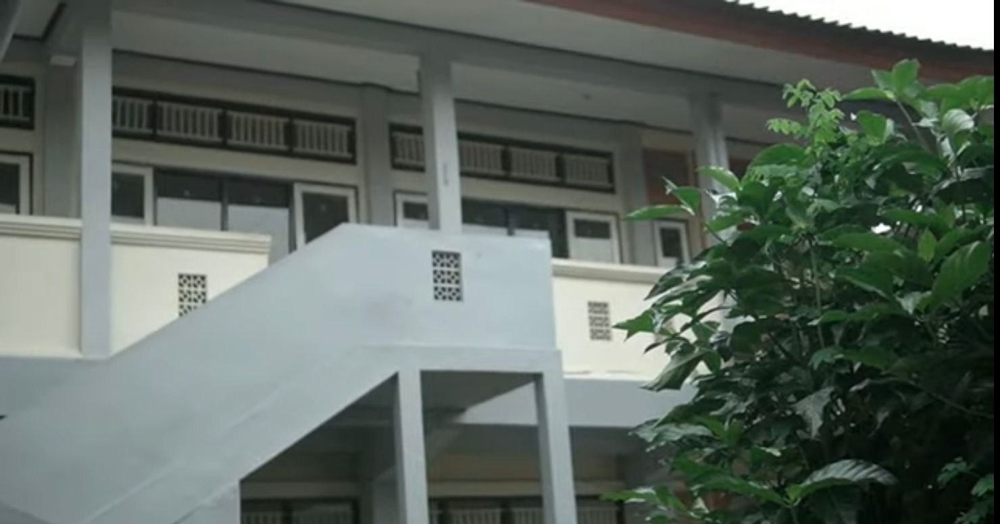
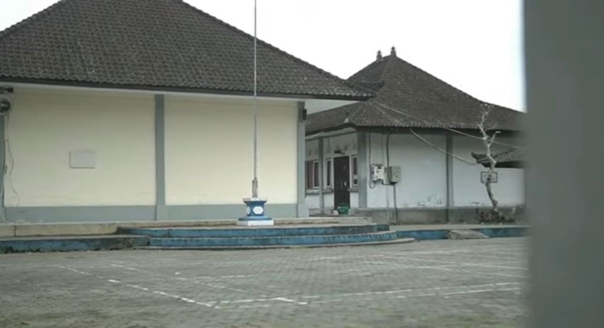
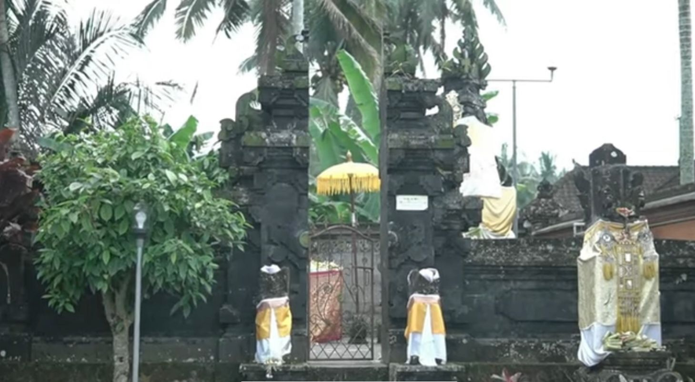
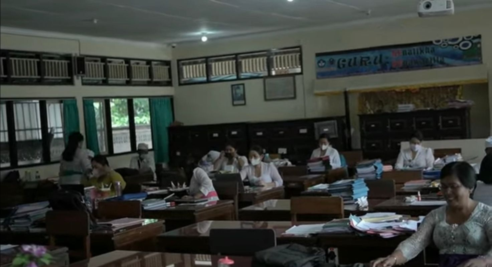

Profil Sekolah
Mewujudkan Sumber Daya Manusia (SDM) yang berkualitas dengan tetap mengedepankan iman dan takwa, mencetak SDM yang tetap memiliki kepedulian social terhadap lingkungan maupun budayanya dan menyadari diri merupakan bagian dari dunia global dan mencetak SDM yang unggul dalam prestasi akademik maupun non akademik.
Sekolah yang bermutu, mencetak generasi yang berilmu
SMERTI
SMA Negeri 1 Baturiti berdiri sejak tahun 1990, lebih tepatnya pada tanggal 1 April 1990. SMA Negeri 1 Baturiti merupakan satu-satunya SMA Negeri di kecamatan Baturiti. Sama seperti sekolah SMA pada umumnya di Indonesia yang memiliki tiga jenjang atau tingkat, mulai dari kelas X, XI, sampai XII.
| Nama Sekolah | : | SMA NEGERI 1 BATURITI |
|---|---|---|
| NPSN | : | 50101131 |
| Status | : | Negeri |
| Akreditasi | : | A |
| Telepon | : | (0368) 2301064 |
| Alamat | : | Br. Puseh, Ds. Perean, Baturiti, Tabanan-Bali |
| : | sman1baturiti@gmail.com |
Visi, Misi, & Tujuan
Visi dan Misi
Visi Sekolah
Visi SMA Negeri 1 Baturiti yaitu
Beriman, Berbudaya, Cerdas dan Berprestasi
mewujudkan SDM yang berkualitas, dan unggul dalam prestasi
akademik maupun non-akademik.
Adapun beberapa indikator dari visi sekolah diatas adalah sebagai berikut:
- Memiliki kesadaran spiritual yang kokoh
- Sopan santun dalam berfikir, berucap dan berbuat
- Berkepribadian yang terpuji dalam kehidupan bermasyarakat
- Berkemampuan mengembangkan potensi diri
- Berprestasi dalam bidang akademik dan non-akademik

Misi Sekolah
Untuk mencapai visi tersebut, ditempuh dengan misi sekolah sebagai berikut :
- Melakukan pembiasaan Tri Sandya bersama sebelum pelajaran dimulai
- Melakukan pembiasaan persembahyangan Purnama Tilem dan Hari Raya Suci
- Melaksanakan bimbingan dan pengembangan bidang akademis maupun non akademis bagi siswa yang memiliki bakat dan potensi khusus sehingga dapat meningkatkan keahliannya
- Melaksanakan pembinaan dan pelatihan sesuai dengan minat dan bakat setiap siswa melalui kegiatan pengembangan diri(ekstrakurikuler)
- Meningkatkan prestasi peserta didik dalam bidang akademik dan non akademik sesuai dengan bakat dan minat secara optimal
Tujuan Sekolah
Dalam jangka waktu lima tahun kedepan SMA Negeri 1 Baturiti memiliki tujuan sebagai berikut:
- Menumbuhkan penghayatan terhadap ajaran agama yang dianut sehingga menjadi sumber kearifan dalam bertindak
- Mengembangkan budaya santun dalam bertutur dan sopan dalam berperilaku
- Membangun potensi dan mengembangkan budaya belajar, gemar membaca, dan menulis
- Mendorong dan membantu setiap siswa untuk mengenali potensi dirinya sehingga dapat dikembangkan secara optimal
- Menumbuhkan sikap ulet dan gigih dalam berkompetisi meraih prestasi belajar
Fasilitas
Sarana dan Prasarana
Ruang UKS
Gedung Kelas
Lapangan Upacara
Padmasana
Perpustakaan

Kantor Guru
